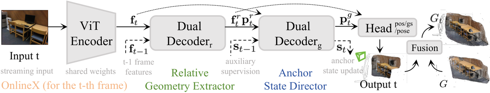
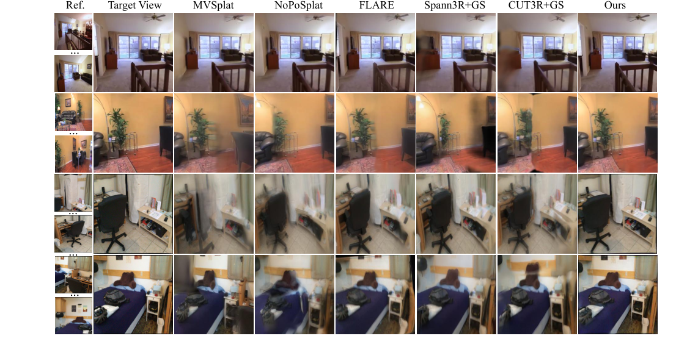
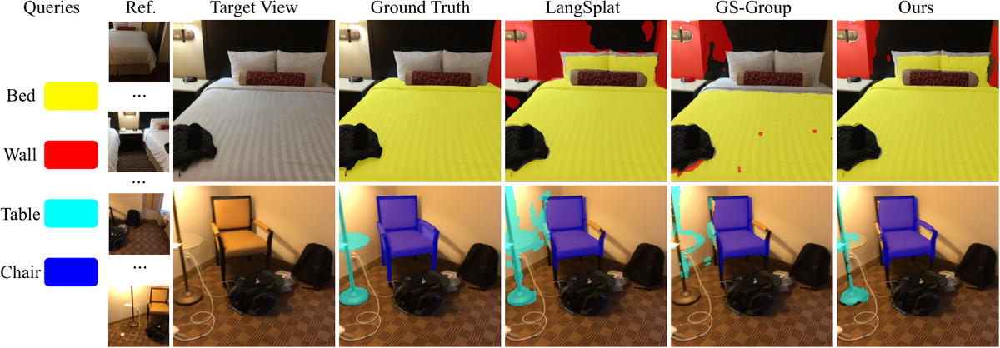
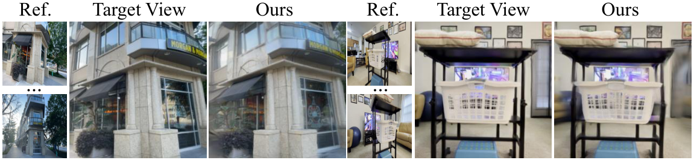
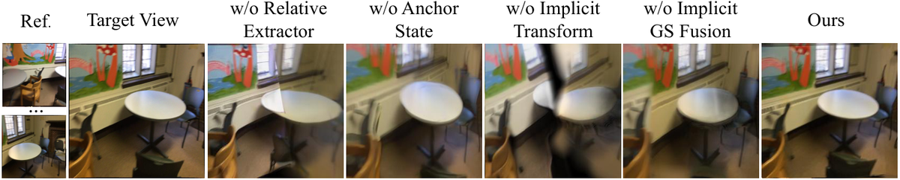

OnlineX：统一在线 3D 重建和理解，从主动到稳定
简单摘要
广义 3D 高斯分布 (3DGS) 的最新进展使得能够在几秒钟内快速重建 3D 场景，从而无需针对每个场景进行优化。在本文中，我们介绍了 OnlineX，这是一种前馈框架，仅使用流图像以在线方式重建 3D 视觉外观和语言场。

为了消除每个场景优化的需要，已经提出了可推广的前馈模型来直接从具有已知相机姿势的图像中预测高斯分布。虽然该架构简单且内存高效，但它很容易受到长期漂移的影响，这是源于其单一状态的表示瓶颈的问题。
核心创新
论文真正新增的设计，首先体现在 在本文中，我们介绍了 OnlineX，这是一种前馈框架，它仅使用流图像以在线方式重建 3D 视觉外观和语言场。这一步不是换个说法重复问题定义，而是直接改动了方法主线的切入点。
进一步看，为了解决这个问题，我们引入了一种解耦的活动到稳定状态演化范例。作者这样安排，是为了让前面的表示、约束或训练信号继续影响后面的求解链路。
进一步看，对主流数据集的实验表明，我们的方法在新颖的视图合成和语义理解方面始终优于先前的工作，展示了跨不同长度的输入序列和实时推理速度的鲁棒性能。作者这样安排，是为了让前面的表示、约束或训练信号继续影响后面的求解链路。
进一步看，为了解决这些限制，我们提出了一种增量 3DGS 重建框架，能够不断对每个传入帧进行高斯回归，而不依赖于整个前面的帧，可以将其表示为。作者这样安排，是为了让前面的表示、约束或训练信号继续影响后面的求解链路。
进一步看，我们推出 OnlineX，这是一个用于从流图像连续渐进重建 3D 场景的框架。作者这样安排，是为了让前面的表示、约束或训练信号继续影响后面的求解链路。
技术细节
虽然简单，但这种设计需要完整的视频序列，这阻碍了其连续 3D 重建的能力。为了解决这些限制，我们提出了一种增量 3DGS 重建框架，能够不断对每个传入帧进行高斯回归，而不依赖于整个先前的帧。该机制执行隐式变换，直接在特征空间中使用全局上下文调节局部几何形状。作者这样设计，是为了把这一节的输入、约束和输出关系讲清楚。
该图说明了单个时间步的此过程，该过程将针对输入流中的每个帧顺序重复。虚线表示从上一个时间步传递的信息或延续到下一个时间步的信息。这一步的作用，是把当前结果继续传给后面的模块或训练目标。
3 方法
围绕 3 方法，我们首先根据章节中的理解定义在线 3D 高斯泼溅重建的问题表述。我们在第 1 节和第 1 节中进一步介绍了在线 3D 高斯重建的主动到稳定状态演化范式。然后，我们提出隐式高斯融合模块来合并第 节中多个视点的重叠 3D 高斯。作者这样设计，是为了把这一节的输入、约束和输出关系讲清楚。
3.1 问题表述
此外，我们为每个高斯添加语言特征，以几何和外观重建语言场作为探索性扩展。虽然简单，但这种设计需要完整的视频序列，这阻碍了其连续 3D 重建的能力。为了解决这些限制，我们提出了一种增量 3DGS 重建框架，能够不断对每个传入帧进行高斯回归，而不依赖于整个先前的帧。作者这样设计，是为了把这一节的输入、约束和输出关系讲清楚。
$$ G_t = \{ ( \mathbf{\mu}_t^i, \mathbf{r}_t^i, \mathbf{s}_t^i, \mathbf{\alpha}_t^i, \mathbf{c}_t^i, \mathbf{l}_t^i ) \}_{i=1}^{N_t}, $$
放在“方法”这一部分看，这条式子是在把 G t 写成可直接计算的形式。右侧按元素列出了 G t 的组成项，说明模型是在逐像素、逐高斯或逐候选地同时预测一整组属性，而不是只输出单个标量。
$$ \{ \begin{aligned} \mathrm{C}(v) &= \sum_{i\in N} \mathbf{c}_i \mathbf{\alpha}_i \prod_{j=1}^{i-1} (1-\mathbf{\alpha}_j), \\ \mathrm{L}(v) &= \sum_{i\in N} \mathbf{l}_i \mathbf{\alpha}_i \prod_{j=1}^{i-1} (1-\mathbf{\alpha}_j), \end{aligned} . $$
放在“方法”这一部分看。这条式子描述了多个分量的聚合或逐步合成过程。它通常表示模型如何把局部贡献、概率权重或多项损失累积成最终结果。
$$ f(\{I_t\}_{t=1}^{T};\mathbf{\theta}) = G, $$
这条式子把整段输入图像序列经过前馈网络映射成一组高斯表示。它对应论文的整体入口：模型直接从观测序列生成可渲染场景，而不是先显式求传统中间几何再另行转换。
$$ f(I_t, \mathbf{h}_{t-1}; \mathbf{\theta}) = G_t, \mathbf{h}_t, \quad t = 1, \dots, T, $$
放在“方法”这一部分看，这条式子重点不是孤立地罗列符号，而是交代 这一项中间量 如何承接前面的输入并把结果交给后续步骤。
3.2 相对几何提取器
围绕 3.2 相对几何提取器，这个阶段不仅减轻了全局锚状态存储高频活动细节的表征负担。然后将连接的特征输入双 ViT 解码器模块，其中每个视图的隐藏特征通过每个注意块中的交叉注意层与另一个视图交互。尽管这些相对输出并不直接构成最终的全局重建，但它们提供了至关重要的辅助监督信号。作者这样设计，是为了把这一节的输入、约束和输出关系讲清楚。
$$ \mathbf{f}_t &= \text{Encoder}(I_t), \\ [\mathbf{p}^{r}_t,\mathbf{f}^{r}_t], [\mathbf{p}'_0,\mathbf{f}^{r}_{t-1}]&= \text{Decoder}_r([\mathbf{p}_1, \mathbf{f}_t],[\mathbf{p}_0,\mathbf{f}_{t-1}]). $$
放在“方法”这一部分看，这条式子重点不是孤立地罗列符号，而是交代 f t 如何承接前面的输入并把结果交给后续步骤。
$$ X_t^r, C_t^r &= \text{Head}^{\text{pos}}_r(\mathbf{f}^r_t, \mathbf{f}^r_{t-1}), \\ G_t^r &= \text{Head}^{\text{gs}}_r(\mathbf{f}_t^r, \mathbf{f}_{t-1}^r), \\ P_t^r &= \text{Head}^{\text{pose}}_r(\mathbf{p}_t^r). $$
放在“方法”这一部分看，这条式子重点不是孤立地罗列符号，而是交代 X t r, C t r 如何承接前面的输入并把结果交给后续步骤。
3.3 锚州主任
围绕 3.3 锚州主任，该过程首先引入存储历史全局上下文的稳定锚定状态。然后通过循环更新机制用锚状态更新该向量。为了将当前帧的信息集成到全局锚定状态中，我们通过连接三个分量为当前帧构造一个紧凑的特征向量。作者这样设计，是为了把这一节的输入、约束和输出关系讲清楚。
前一阶段的相对每像素特征（封装高保真局部几何形状）和更新的全局姿态特征（提供全局上下文）。然后，这些特征由一组不同的头处理，以基于第一帧的坐标系回归最终的全局输出。该机制执行隐式变换，直接在特征空间中使用全局上下文调节局部几何形状。这一步的作用，是把当前结果继续传给后面的模块或训练目标。
$$ \mathbf{p}^{g}_t, \mathbf{s}_t= \text{Decoder}_{g}([\mathbf{\bar{f}}_t, \mathbf{\bar{f}}^r_t, \mathbf{p}^r_t], \mathbf{s}_{t-1}). $$
这条式子是在定义一个可直接计算的中间量：右侧把相对位置、方向、权重或比例关系组合起来，左侧则把这个组合结果记成后续模块要反复使用的变量。
$$ X_t^g, C_t^g &= \text{Head}_g^{\text{pos}}(\mathbf{f}_t^r, \mathbf{p}_t^g), \\ G_t^g &= \text{Head}_g^{\text{gs}}(\mathbf{f}_t^r, \mathbf{p}_t^g), \\ P_t^g &= \text{Head}_g^{\text{pose}}(\mathbf{p}_t^g). $$
放在“方法”这一部分看，这条式子重点不是孤立地罗列符号，而是交代 X t g, C t g 如何承接前面的输入并把结果交给后续步骤。
3.4 隐式高斯融合
围绕 3.4 隐式高斯融合，受 的启发，该模块通过自适应识别和合并潜在空间中附近的图元来解决这个问题。对于每个新的高斯（具有中心和置信度），我们首先通过查找同一空间体素内的所有现有高斯来识别其邻域。然后融合过程细化几何位置和潜在属性。作者这样设计，是为了把这一节的输入、约束和输出关系讲清楚。
$$ \mathbf{x}'_t = \frac{c_t \mathbf{x}_t + \sum_{i \in \mathcal{N}_t} c_i \mathbf{x}_i}{c_t + \sum_{i \in \mathcal{N}_t} c_i}, $$
这条式子是在做置信度加权的邻域融合：当前点和邻居点的位置会按各自置信度重新加权平均，得到更稳的更新位置。作者这样做，是为了让不可靠局部观测不会单独把几何带偏。
$$ \tilde{\mathbf{g}}_n &= \frac{\sum_{i \in \mathcal{N}_t} c_i \mathbf{g}_i}{\sum_{i \in \mathcal{N}_t} c_i},\\ \mathbf{g}'_t &= \text{MLP}([\mathbf{g}_t, \tilde{\mathbf{g}}_n]). $$
这条式子先把邻域特征按权重汇总成一个局部摘要，再与当前点特征一起送入 MLP 做融合。它承担的角色是把周围上下文压缩成对当前高斯有用的更新信号。
3.5 培训详情
围绕 3.5 培训详情，我们的框架使用复合损失函数进行端到端训练，其中包括姿势、视觉渲染和语言渲染术语。至关重要的是，我们采用了辅助监督策略，其中这些损失应用于我们架构的中间相对阶段和最终全局阶段。这个中间目标确保网络首先学习提取高保真局部表示，这为后续的全局更新提供了稳定的基础。作者这样设计，是为了把这一节的输入、约束和输出关系讲清楚。
| 1.0cmwc1.0cmwc1.1cmwc1.0cmwc1.0cmwc1.1cmwc1.0cmwc1.0cmwc1.1cm 2*Method | 2 views | 4 views | 8 views | ||||||
|---|---|---|---|---|---|---|---|---|---|
| PSNR | SSIM | LPIPS | PSNR | SSIM | LPIPS | PSNR | SSIM | LPIPS | |
| MVSplat | 24.73 | 0.829 | 0.171 | 21.91 | 0.753 | 0.358 | 20.41 | 0.696 | 0.434 |
| NoPoSplat | 25.59 | 0.849 | 0.140 | 22.63 | 0.771 | 0.302 | 21.08 | 0.671 | 0.412 |
| FLARE | 24.83 | 0.834 | 0.165 | 23.16 | 0.794 | 0.218 | 22.41 | 0.765 | 0.314 |
| Spann3R +GS | 22.43 | 0.761 | 0.317 | 22.07 | 0.732 | 0.374 | 21.86 | 0.701 | 0.396 |
| CUT3R +GS | 23.12 | 0.798 | 0.208 | 22.91 | 0.775 | 0.241 | 22.78 | 0.774 | 0.236 |
| Ours | 25.78 | 0.845 | 0.144 | 25.56 | 0.839 | 0.147 | 25.59 | 0.841 | 0.148 |
| 1.0cmwc1.0cmwc1.1cmwc1.0cmwc1.0cmwc1.1cmwc1.0cmwc1.0cmwc1.1cm 2*Method | 10 views | 20 views | 30 views | ||||||
|---|---|---|---|---|---|---|---|---|---|
| PSNR | SSIM | LPIPS | PSNR | SSIM | LPIPS | PSNR | SSIM | LPIPS | |
| MVSplat | 20.03 | 0.686 | 0.414 | 18.72 | 0.561 | 0.511 | 16.02 | 0.505 | 0.591 |
| NoPoSplat | 21.34 | 0.729 | 0.360 | 19.42 | 0.635 | 0.469 | 18.73 | 0.574 | 0.502 |
| FLARE | 21.75 | 0.751 | 0.330 | 19.91 | 0.652 | 0.447 | 19.15 | 0.619 | 0.485 |
| Spann3R +GS | 21.54 | 0.732 | 0.357 | 20.91 | 0.712 | 0.367 | 20.42 | 0.689 | 0.387 |
| CUT3R +GS | 21.97 | 0.762 | 0.323 | 20.79 | 0.709 | 0.382 | 20.01 | 0.687 | 0.401 |
| Ours | 24.13 | 0.811 | 0.174 | 23.86 | 0.782 | 0.189 | 23.73 | 0.769 | 0.194 |
实验结论
我们在两个广泛使用的现实数据集上训练和评估我们的模型。作为我们的主要基准，RE10K 用于对有限空间范围的视频序列进行性能评估，而 ScanNet 则作为我们房间规模重建任务的基础。为了评估我们模型的泛化能力，我们进一步对 DL3DV 数据集进行零样本评估。
在少视图设置中，我们的方法实现了与离线重建基线相当的性能。图中进一步显示了 NVS 与基线方法相比的可视化结果。我们在具有 30 个输入视图的 ScanNet 数据集上评估了我们的方法的相机姿态估计准确性。
4.1 实验设置
我们在两个广泛使用的现实数据集上训练和评估我们的模型。作为我们的主要基准，RE10K 用于对有限空间范围的视频序列进行性能评估，而 ScanNet 则作为我们房间规模重建任务的基础。为了评估我们模型的泛化能力，我们进一步对 DL3DV 数据集进行零样本评估。

| Method | ATE | RPE trans | RPE rot |
|---|---|---|---|
| Spann3R | 0.096 | 0.023 | 0.661 |
| CUT3R | 0.099 | 0.022 | 0.600 |
| Ours | 0.085 | 0.019 | 0.550 |
| Method | 5 views | 15 views | ||
|---|---|---|---|---|
| mIoU | mAcc | mIoU | mAcc | |
| LangSplat | 54.63 | 71.15 | 56.91 | 73.41 |
| GS-Group | 51.61 | 68.32 | 53.26 | 67.63 |
| Ours | 58.83 | 77.12 | 57.79 | 76.36 |
4.2 结果
在少视图设置中，我们的方法实现了与离线重建基线相当的性能。如表所示，我们的 OnlineX 框架在所有三个指标上始终优于两个基线，这证明了我们的解耦架构在保持更准确和更强大的相机方面的有效性。与现有的 3D 语言领域方法（例如 LangSplat 和 Gaussian Grouping）相比，我们的方法在这两个指标上都实现了卓越的性能。


| Method | Spann3R | CUT3R | Ours |
|---|---|---|---|
| FPS | 13.35 | 25.78 | 23.12 |
| Memory(GB) | 32.73 | 19.76 | 21.64 |
| Method | PSNR | SSIM | LPIPS |
|---|---|---|---|
| w/o Relative Extractor | 20.85 | 0.712 | 0.368 |
| w/o Anchor State | 19.92 | 0.685 | 0.441 |
| w/o Implicit Transform | 16.52 | 0.533 | 0.552 |
| w/o Implicit GS Fusion | 22.61 | 0.778 | 0.284 |
| Ours (Full Model) | 24.13 | 0.811 | 0.174 |
4.3 消融研究
我们进行了广泛的消融研究，以验证我们关键组件的有效性（表和图）。放弃锚定状态会导致严重的相机漂移，证实了其长期一致性的必要性。最后，省略隐式 GS Fusion 模块会产生更模糊的结果，并在对象边界处出现明显的重叠高斯。

理解评价
如果把这篇论文放回问题背景里看，它真正的价值在于：在本文中，我们介绍了 OnlineX，这是一种前馈框架，仅使用流图像以在线方式重建 3D 视觉外观和语言场。这说明作者不是只补一个局部模块，而是在重新组织问题该怎样被解决。
最能支撑这个判断的，还是实验给出的证据：在线公式中的一个关键挑战是累积漂移问题，其根源在于记忆状态的两个对立角色之间的根本冲突。换句话说，这些设计并不只是概念上更完整，而是实实在在改变了最终结果。
当然，它离真正成熟的方案还有距离：当前方案的局限在于它仍然受制于计算资源、输入质量或场景复杂度，距离真正稳健的大规模部署还有差距。后续更值得继续推进的方向，是 未来继续提升效率、泛化能力以及在更复杂场景下的稳定性。